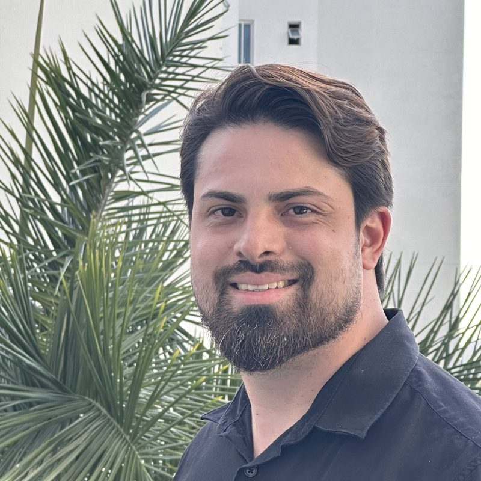
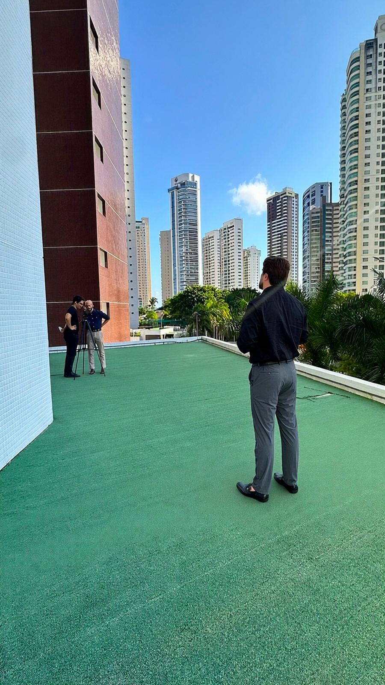

Estrutura comercial
Processo de vendas claro, com etapas, responsáveis e scripts que a equipe consegue seguir no dia a dia.
Ajudo pequenas e médias empresas a vender melhor, cuidar do cliente depois da venda e transformar quem comprou uma vez em quem compra sempre.

Processo de vendas claro, com etapas, responsáveis e scripts que a equipe consegue seguir no dia a dia.
Rotinas de acompanhamento para o cliente se sentir lembrado e ter motivos para continuar com você.
Ações para trazer de volta quem sumiu e aumentar a frequência de quem já compra.
Acompanhamento de conversão, ticket médio, cancelamento e recompra, para decidir com base no que está acontecendo.
Entendo como a empresa vende hoje e onde os clientes estão se perdendo.
Definimos juntos o que vai ser feito, em quanto tempo e com quais metas.
Coloco processos, rotinas e scripts para funcionar com a sua equipe.
Reuniões e relatórios para ajustar o que for preciso ao longo do caminho.
Continuo por perto depois da entrega, do mesmo jeito que ensino a fazer.
A última etapa é a mesma coisa que eu ensino: o cliente não termina na venda.
Atendimento presencial ou online, para empresas de todo o Brasil.
Sou de João Pessoa e me formei em Engenharia Civil, mas minha carreira foi construída em operações, vendas, relacionamento e gestão.
Fundei a SUA Assessoria e liderei áreas de relacionamento e inteligência comercial. Nesse caminho, vi muitas empresas boas perderem clientes por falta de cuidado depois da venda.
Hoje sou responsável pelo departamento de estratégia de várias empresas, organizando processo comercial, pós-venda e recorrência de um jeito simples que a equipe consegue manter. E, através da SUA Plataforma, levo tecnologia e processos para muitas outras.
A SUA Plataforma leva para a tecnologia o mesmo cuidado que eu aplico nas consultorias. É um sistema de gestão pensado para negócios de serviços, que junta o dia a dia da operação ao relacionamento com o cliente.
Para barbearias, salões, pet shops, clínicas de estética e outros negócios que vivem de cliente que volta.
No Instagram eu mostro bastidores, experiências reais de atendimento e o que funciona para fazer o cliente voltar.
